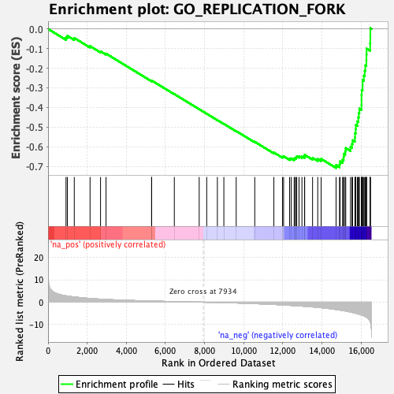

| | | Dataset | DE_genes2 |
| Phenotype | NoPhenotypeAvailable |
| Upregulated in class | na_neg |
| GeneSet | GO_REPLICATION_FORK |
| Enrichment Score (ES) | -0.7083039 |
| Normalized Enrichment Score (NES) | -2.1215634 |
| Nominal p-value | 0.0 |
| FDR q-value | 0.0 |
| FWER p-Value | 0.0 |
Table: GSEA Results Summary

Fig 1: Enrichment plot: GO_REPLICATION_FORK
Profile of the Running ES Score & Positions of GeneSet Members on the Rank Ordered List
| PROBE | GENE SYMBOL | GENE_TITLE | RANK IN GENE LIST | RANK METRIC SCORE | RUNNING ES | CORE ENRICHMENT | | 1 | ZMIZ2 | | | 917 | 2.847 | -0.0430 | No |
| 2 | SMARCAL1 | | | 986 | 2.753 | -0.0349 | No |
| 3 | POLD4 | | | 1340 | 2.323 | -0.0460 | No |
| 4 | TP53BP1 | | | 2146 | 1.651 | -0.0875 | No |
| 5 | DMAP1 | | | 2682 | 1.348 | -0.1140 | No |
| 6 | TREX1 | | | 2962 | 1.212 | -0.1255 | No |
| 7 | BCL6 | | | 5290 | 0.494 | -0.2646 | No |
| 8 | RAD51B | | | 5295 | 0.493 | -0.2627 | No |
| 9 | TP53 | | | 6453 | 0.253 | -0.3318 | No |
| 10 | ERCC5 | | | 7724 | 0.029 | -0.4088 | No |
| 11 | RPA2 | | | 8108 | -0.028 | -0.4320 | No |
| 12 | POLH | | | 8653 | -0.120 | -0.4645 | No |
| 13 | HMCES | | | 8984 | -0.189 | -0.4836 | No |
| 14 | POLA2 | | | 9615 | -0.343 | -0.5204 | No |
| 15 | UBE2B | | | 10564 | -0.649 | -0.5751 | No |
| 16 | PRPF19 | | | 11540 | -1.025 | -0.6297 | No |
| 17 | TONSL | | | 11980 | -1.209 | -0.6510 | No |
| 18 | POLD2 | | | 12038 | -1.238 | -0.6489 | No |
| 19 | RPA3 | | | 12343 | -1.397 | -0.6612 | No |
| 20 | HELB | | | 12425 | -1.437 | -0.6597 | No |
| 21 | RFC2 | | | 12578 | -1.523 | -0.6621 | No |
| 22 | RAD51D | | | 12611 | -1.538 | -0.6572 | No |
| 23 | PRIM2 | | | 12678 | -1.578 | -0.6542 | No |
| 24 | XRCC3 | | | 12710 | -1.592 | -0.6490 | No |
| 25 | DNMT1 | | | 12826 | -1.669 | -0.6485 | No |
| 26 | POLD3 | | | 12975 | -1.753 | -0.6497 | No |
| 27 | RPA1 | | | 13109 | -1.830 | -0.6497 | No |
| 28 | POLD1 | | | 13115 | -1.833 | -0.6418 | No |
| 29 | TIMELESS | | | 13518 | -2.107 | -0.6568 | No |
| 30 | MCM3 | | | 13783 | -2.315 | -0.6625 | No |
| 31 | RFC5 | | | 13956 | -2.460 | -0.6620 | No |
| 32 | PLRG1 | | | 14719 | -3.266 | -0.6938 | Yes |
| 33 | PCNA | | | 14896 | -3.501 | -0.6889 | Yes |
| 34 | RAD51C | | | 14925 | -3.543 | -0.6748 | Yes |
| 35 | BAZ1B | | | 15050 | -3.719 | -0.6657 | Yes |
| 36 | DONSON | | | 15105 | -3.791 | -0.6521 | Yes |
| 37 | XPA | | | 15115 | -3.801 | -0.6358 | Yes |
| 38 | ETAA1 | | | 15187 | -3.901 | -0.6227 | Yes |
| 39 | POLA1 | | | 15213 | -3.936 | -0.6067 | Yes |
| 40 | PURB | | | 15457 | -4.400 | -0.6018 | Yes |
| 41 | RAD18 | | | 15531 | -4.556 | -0.5860 | Yes |
| 42 | CDC5L | | | 15563 | -4.617 | -0.5673 | Yes |
| 43 | UHRF1 | | | 15683 | -4.875 | -0.5528 | Yes |
| 44 | GINS4 | | | 15688 | -4.879 | -0.5313 | Yes |
| 45 | BCAS2 | | | 15723 | -4.951 | -0.5113 | Yes |
| 46 | BLM | | | 15728 | -4.957 | -0.4895 | Yes |
| 47 | RFC4 | | | 15807 | -5.149 | -0.4713 | Yes |
| 48 | PRIM1 | | | 15856 | -5.276 | -0.4507 | Yes |
| 49 | TOP1 | | | 15882 | -5.336 | -0.4285 | Yes |
| 50 | SMARCA5 | | | 15909 | -5.412 | -0.4060 | Yes |
| 51 | PIF1 | | | 16018 | -5.727 | -0.3870 | Yes |
| 52 | RFC3 | | | 16020 | -5.728 | -0.3616 | Yes |
| 53 | NBN | | | 16021 | -5.731 | -0.3360 | Yes |
| 54 | RFC1 | | | 16030 | -5.761 | -0.3109 | Yes |
| 55 | WRN | | | 16074 | -5.884 | -0.2873 | Yes |
| 56 | PURA | | | 16076 | -5.891 | -0.2611 | Yes |
| 57 | TIPIN | | | 16138 | -6.072 | -0.2378 | Yes |
| 58 | MMS22L | | | 16185 | -6.275 | -0.2126 | Yes |
| 59 | GINS2 | | | 16213 | -6.392 | -0.1858 | Yes |
| 60 | ZRANB3 | | | 16266 | -6.660 | -0.1593 | Yes |
| 61 | CDC45 | | | 16272 | -6.693 | -0.1298 | Yes |
| 62 | SMARCAD1 | | | 16278 | -6.759 | -0.1000 | Yes |
| 63 | XRCC2 | | | 16461 | -8.522 | -0.0731 | Yes |
| 64 | WDHD1 | | | 16469 | -8.658 | -0.0349 | Yes |
| 65 | MCM10 | | | 16471 | -8.676 | 0.0036 | Yes |
Table: GSEA details [plain text format]
Fig 2: GO_REPLICATION_FORK: Random ES distribution
Gene set null distribution of ES for GO_REPLICATION_FORK